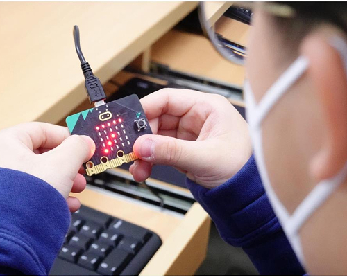

Home > 교육안내 > 교육과정
교육과정
arrow_cool_downScitizen
S
C
I
T
I
Z
E
N
국립과천과학관의 교육목표는 과학적 소양과 탐구를 바탕으로
책임감 있는 미래 시민 Scitizen을 양성하는 데에 있습니다.
auto_stories실험탐구과정
최신의 실험 장비를 활용하여 과학의 본성을 이해하고 과학하는 과정을 경험할 수 있는실험‧실습 프로그램 장비 위주의 분야별 특화랩이 마련되어 있어 분야별,단계별 심화 탐구학습이 가능합니다.
-
- 입자와 입자 운동(수업)
-
- 탄소로 만들었다(수업)
-
- 생물학자의 눈이 되어 주는 현미경(수업)
auto_storiesSW탐구과정
기초 코딩에서부터 하드웨어 연계 심화 프로그래밍에 이르기까지 3단계로 체계화된 소프트웨어 실습 프로그램 컴퓨터 외에도회로나 블록 등과 같은 다양한 교구를 활용한 코딩 또는 프로그래밍 학습이 가능합니다.
-

- 마빗과 함께 하는 테마코딩(수업)
-
- 마퀸카와 함께 블록코딩에서 파이썬까지(수업)
-
- 인공지능이랑 코딩이랑 놀자!(수업)
auto_stories주제탐구과정
다양한 과학 융합 체험 활동으로 구성된 기초 소양 탐구 프로그램입니다.한 가지 주제에 대해 여러 차시를 나누어 차근차근 학습할 수 있습니다.
-
- 기후위기 시계를 멈추자(수업)
-
- 가족과 함께하는 업사이클링(수업)
-
- 생명의 그물망을 지켜라(수업)
auto_stories진로탐구과정
과학기술 분야의 다양한 진로 체험 활동을 통해 자신의 미래를 설계‧상상해보는 진로탐색 프로그램입니다.학생 위주의 교육관 체험 수업과 가족과 함께 현장으로 떠나는 탐방형 수업이 있습니다.
-
- 과학수사-꼭꼭 숨은 흔적 쏙쏙 찾아내라(수업)
-
- 식물 조직 배양과 의공학(수업)
-
- 가족동반 진로탐색-인공지능 편(탐방)
auto_stories전시탐구과정
기획전과 연계하여 개발된 실험‧체험 교육 프로그램입니다.기획전시와 연관된 과학기술 원리를 실험과 체험을 통해 알아보고 전시의 주제와 의미를 더 잘 이해할 수 있습니다.
-

- 바이러스 탈출 넘버원(수업)
-
- 세상을 돌고 도는 탄소C(수업)
-
- 세상을 돌고 도는 탄소C(수업)
auto_stories창작탐구과정
디지털 창작 및 공학적 설계 기반 실습 중심의 워크숍 교육 프로그램입니다.직접 만지고 꾸미며 디자인 사고와 컴퓨팅 사고를 익힐 수 있습니다.
-

- 이상한 오토마타 공작실(수업)
-
- 모디로 배우는 거꾸로 코딩(수업)
-
- 모디로 배우는 거꾸로 코딩(수업)
auto_stories과학이 또옴
놀이와 학습이 융합된 비대면 과학관 교육 구독서비스 및 현장 대면 유아 과학 교육 프로그램입니다.정기적으로 집으로 배송오는 과학상자를 온 가족과 함께 즐길 수 있습니다.
-
- 22년 4월 감각 또옴 활동
-

- 22년 12월 김치 또옴 활동
-
- 23년 5월 과학자 또옴 패키지